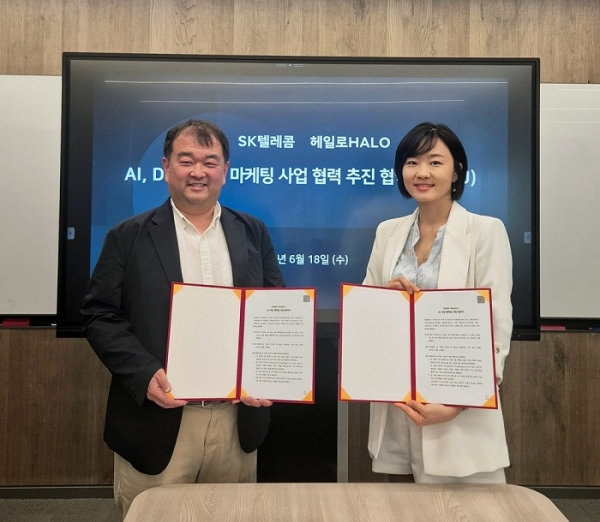

헤일로(HALO)–SK텔레콤, AI 기반 마케팅 사업 협력 MOU 체결
브랜딩 전문 기업 헤일로가 SKT의 빅데이타를 만나다.
브랜드 컨설팅 전문기업 헤일로(HALO)와 SK텔레콤(SKT)은 2025년 6월 19일, AI 기반 마케팅 사업 협력 추진을 위한 전략적 업무협약(MOU)을 체결했다.
이번 협약을 통해 양사는 AI 기술과 빅데이터를 활용한 맞춤형 마케팅 솔루션을 제공할 계획이다. SK텔레콤의 AI Survey, AI Marketing 플랫폼과 HALO의 브랜드 컨설팅 전문성을 결합하여 정밀한 AI 브랜드 마케팅을 구현한다.
SK텔레콤은 AI 기반 설문·분석 기술을 바탕으로, 고객 선호도 기반 타겟팅과 실시간 마케팅 집행이 가능한 실행 플랫폼을 갖추고 있다. 헤일로는 '메타인지 브랜딩 전략'을 통해 브랜드 본질과 고객 페르소나를 정밀하게 연결하여, 진정성 기반의 일관된 브랜드 정체성을 구축하는 전문 컨설팅 기업이다.
양사는 이러한 실행력과 전략적 사고를 결합해, 기업 및 브랜드 조직을 위한 고객 중심 마케팅 인프라를 구축한다는 점에서 이번 협약의 의미가 크다.

하지현 HALO 대표는 "브랜드 전략에서 인식 개선을 위해서는 고객 본질을 이해한 데이터 기반 소통이 핵심"라며 "HALO는 SKT와 함께 단순한 타겟팅을 넘어 고객의 진짜 니즈를 파악하고 브랜드와의 연대감을 구축하는 고객 중심 마케팅의 새로운 기준을 만들어, 더 많은 기업이 고객과 진정성 있는 관계를 형성할 수 있도록 돕겠다"고 밝혔다.
SK텔레콤 관계자는 "AI Survey와 AI 마케팅 플랫폼을 기반으로, 기업과 브랜드에게 실질적인 성과와 고객 인사이트를 제공할 수 있게 되어 기쁘게 생각한다"며 "HALO와 함께 데이터 기반 브랜딩의 가치를 산업 전반에 확산시키겠다"고 전했다.
양사는 향후 업종별 맞춤형 브랜드 마케팅 솔루션을 공동 기획할 계획이다. (사)한국 마케팅 협회 및 회원사들과의 시범 프로젝트를 시작으로, AI 기반 브랜딩 자동화 플랫폼 개발 및 SaaS 상용화까지 협력 범위를 확대해 나갈 예정이다.
이번 협력을 통해 브랜딩 전략과 기술 기반 마케팅이 하나의 흐름으로 통합되며, 기업들이 새로운 시장을 창출하고 기존 고객과의 관계를 더욱 견고히 할 수 있도록 실질적인 기반을 마련하게 된다. 두 기업은 이를 통해 AI 기반 브랜드 마케팅 솔루션의 표준을 구축하고, 지속 가능한 성장을 도모할 계획이다.
출처 : 데일리경제(http://www.kdpress.co.kr)